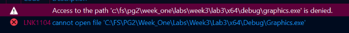
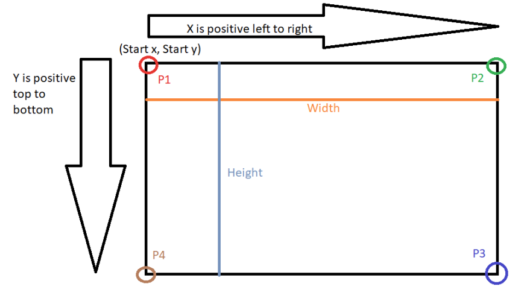

📘 Lab 3: Frequently Asked Questions
- ❓ Q: Do you have any tips for lab 3?
- ❓ Q: I get a build error saying access is denied to my graphics.exe file. What do I do?
- ❓ Q: Variable name errors in the .h file?
- ❓ Q: How do I make a rectangle with a point, width, and height?
- ❓ Q: How do I get my rectangle to fit within the window?
- ❓ Q: How do I make my circle fit within the window?
❓ Q: Do you have any tips for lab 3?
💡 A: Of course! Here they are...
📄 Pseudocode STILL Matters!
- Most issues with your line/circle are from not following the pseudocode.
- Only exception: you didn’t switch from terminal to console window.
endifjust ends the if statement in pseudocode.while(true)is totally valid.if (condition) break;means the break is the body.- You can rewrite it as
if (condition) { break; }for clarity.
- You can rewrite it as
Rules of Scoping (public/private/protected)
- Use them intentionally!
- Ask yourself: “Should other files see this?”
- These are core Programming concepts — don’t ignore them.
🏗️ Constructors & Initialization
Use member initialization lists! Example:
MyClass(int a, int b) : m_a(a), m_b(b) {}❌ Don’t Include Your `.cpp` Files
- Including
.cppfiles = 50+ errors (circular inclusion nightmares). - Only include
.hfiles — when needed. - Tip: If A.h includes B.h, and you include A.h in your file, you don’t need to include B.h again — it’s already included!
🎨 Random Number in a Range
Use this pseudocode template to generate values within a target span:
int num = rand() % max + min;❓ Q: I get a build error saying access is denied to my graphics.exe file. What do I do?
💡 A: There can be a few causes...
This is usually triggered when one of the following occurs:
- Visual Studio has the file locked.
- The debugger was unlinked from the graphics.exe program.
- Virus protection has locked the folder.
Here are several ways to fix the problem:
- Open the task manager, find
graphics.exe, and select End Task. - Restart Visual Studio.
- Restart your computer.

❓ Q: I'm getting errors for the variable names I used in the .h file. Visual Studio says it's not a non-static data member or base class of class Pixel. What's wrong?
💡 A: Do not name the getters/setters with the same name as your fields.
Giving accessor functions the exact same name as your private variables confuses the compiler.
❌ Example of the problem:
class BFG {
private:
int roundsPerSecond;
public:
int roundsPerSecond() { return roundsPerSecond; }
BFG(int rounds);
};
// In the cpp file...
// ERROR! The compiler won't know which symbol to use here
BFG::BFG(int rounds) : roundsPerSecond(rounds) {}✅ How to fix the example:
Use a clear naming convention for your member variables to distinguish them from methods (e.g., trailing underscores, prefixes):
class BFG {
private:
int roundsPerSecond_; // Trailing underscore fixes the conflict
public:
int roundsPerSecond() const { return roundsPerSecond_; }
BFG(int rounds);
};❓ Q: How do I make a rectangle with a point and width and height?
💡 A: Combine the width and height with the start point
A rectangle is defined by a Point2D (representing the top-left corner), a width, and a height. You combine these parameters to generate the 4 lines. An easy approach is calculating the remaining 3 coordinate points (top-right, bottom-left, and bottom-right):
- If your top-left corner is at (75, 35), width is 10, and height is 15:
- Top-Right: (75 + 10), 35 → (85, 35)
- Bottom-Left: 75, (35 + 15) → (75, 50)
- Bottom-Right: (75 + 10), (35 + 15) → (85, 50)
NOTE: The coordinate origin (0,0) resides at the top-left corner of the window. X values increase from left to right, while Y values increase from top to bottom.

❓ Q: How do I get my rectangle to fit within the window?
💡 A: The rectangle is constrained by the window's size
To ensure your shape doesn't get clipped, your starting top-left coordinates plus the shape dimensions must remain within the window's max boundaries.
- If your window size is (100, 80) and your top-left choice lands at (75, 35):
- The max allowable width is
100 - 75 = 25 - The max allowable height is
80 - 35 = 45
- The max allowable width is
- Pass those calculated maximum boundaries into your random distribution loops to guarantee the shape stays completely visible.
❓ Q: How do I make my circle fit within the window?
💡 A: The center point + radius cannot exceed the bounds of the window
Your radius selection must be dynamically throttled based on where the center point is positioned. For example:
- If your total screen size is (100, 80) and the chosen center point lands at (5, 77):
- The distance to the bottom boundary is
80 - 77 = 3 - The distance to the left boundary is
5 - 0 = 5
- The distance to the bottom boundary is
- To keep the circle fully on screen, the absolute maximum radius is bounded by the smallest edge margin, which is 3.
- Determine your center point coordinates.
- Find the distance from that center point to all four window borders to isolate the smallest margin gap.
- Use that smallest distance as your maximum ceiling limit when generating a random radius.